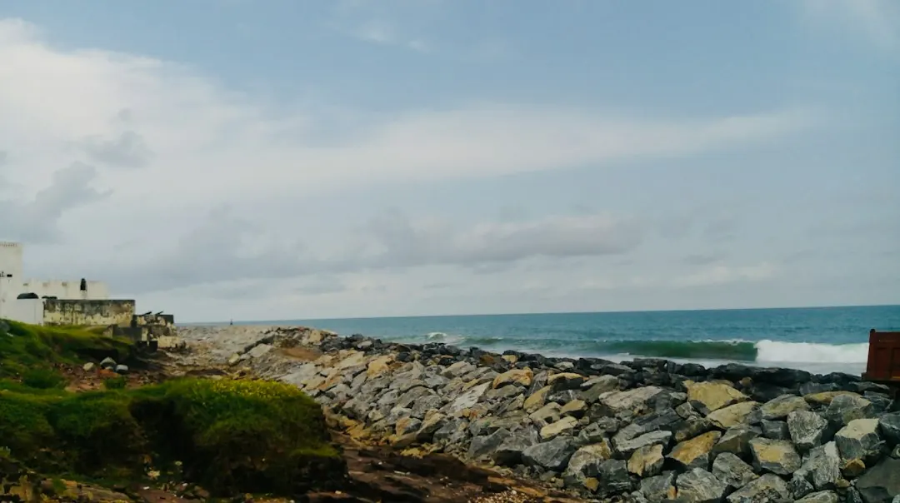

Retaining wall decisions on the Gold Coast depend on soil, water, loads, access and approval requirements before material choice. Concrete sleepers, segmental blocks, timber, boulders and gabions suit different site conditions. Drainage needs a lawful destination, while height, surcharge, nearby structures, pool fencing, easements, services and boundary setbacks can affect the scope. Gather the wall height, access route, water flow and surrounding structures before asking for a project review.
For homeowners comparing gold coast retaining walls, the useful starting point is a site review that brings soil, water, loads, access, materials and approval questions into one scope.
Gold Coast Retaining Walls Explained
Gold Coast Retaining Wall describes the wall as a system that must manage soil, water, loads and access before it becomes a finish choice. That order is useful for coastal estates, compact suburban boundaries and hinterland slopes, where the highest point, drainage route and construction access can change the practical scope.
Record the wall's highest point, the route for an excavator, the location for materials and the likely spoil path. A narrow gate may rule out components that need mechanical lifting. Groundwater can make the drainage outlet more important than the visible face material. These details should be available before comparing quotes.
- Measure the height and length at the highest and lowest areas.
- Note nearby buildings, fences, pools, services, easements and boundary lines.
- Describe where surface water, roofwater and runoff currently travel.
Match the wall system to the site
Material selection is a trade-off between ground conditions, geometry, access, appearance and maintenance. Reinforced concrete sleepers with steel posts are presented for residential boundaries, terraces and replacement walls where a clean, low-maintenance finish is wanted. Segmental blocks suit modular terraces and engineered walls when the geometry and ground conditions support them.
Boulders and natural stone can work with larger landscapes and sloping sites when drainage, batter and machine access are designed together. Treated timber sleepers are described for suitable low garden and landscape applications, with drainage and expected service life made clear before construction. Gabions use rock-filled cages where a textured, free-draining finish suits the landscape, erosion or retaining application.
The visible surface should therefore be the final decision, not the first. Ask which system fits the loads, water path and access limitations, and what maintenance or replacement assumptions are included.
Treat drainage as part of the structure
Water should be mapped before excavation and before the wall is closed. The published guidance identifies free-draining aggregate, geofabric and subsoil drainage as parts of a drainage approach, but also stresses that water needs a lawful destination. Surface runoff, roofwater, neighbouring levels and low points belong in the site discussion.
A drainage question is more useful than a generic promise of good performance. Ask where collected water will discharge, how the outlet relates to the stormwater system, and whether erosion control is needed below or beside the wall. The answer may affect the material choice, excavation plan and final scope.
For a repair, describe whether the wall is leaning, bulging, cracked, rotted or poorly drained. The appropriate response may be targeted work or complete replacement, depending on the assessment.
Check approval and engineering questions early
The City of Gold Coast approval criteria should be treated as a complete test. A one-metre shortcut does not answer every approval question. The published guidance identifies separation between walls, surcharge, nearby buildings, pool fencing, easements, services and boundary setbacks as matters that can affect the assessment.
Where those conditions apply, separate the questions by role. A designer can help define the wall system, a structural engineer can address engineering matters, a private building certifier can advise on certification, and a contractor can explain construction access and sequencing. The right professional depends on the site facts, not simply on the wall's appearance.
Keep a written scope showing the measured height, nearby constraints, drainage assumptions and any approval pathway being considered. This gives each person the same information and makes gaps easier to identify.
Prepare a quote that can be compared
A useful enquiry includes the location, wall dimensions, access conditions, desired outcome and photographs showing levels, water movement and nearby structures. The published project review process asks for the wall, location and access details, with an optional project description to clarify the likely scope.
Compare quotes by checking what is included for excavation, spoil, materials, drainage, lawful discharge, engineering or approval coordination, repairs and reinstatement. If a price is presented as an early planning range, check its assumptions before treating it as a construction price.
For another perspective on material and site choices, see the companion guide to retaining walls on the Gold Coast. Keep the final decision tied to measured site conditions and the responsibilities stated in writing.
- Measure the wall. Record the highest point, length, levels and nearby boundary conditions.
- Map access. Identify the route for excavation equipment, materials and spoil removal.
- Trace water. Note runoff, roofwater, low points and the proposed lawful discharge path.
- List constraints. Record buildings, pool fencing, easements, services, setbacks and surcharge concerns.
- Request a written scope. Ask for materials, drainage, approval responsibilities, assumptions and exclusions in writing.
| Site factor | Why it changes the decision | Question to ask |
|---|---|---|
| Water and drainage | Outlet planning may matter more than the face material. | Where will subsoil and surface water lawfully discharge? |
| Access | A narrow gate can limit components requiring mechanical lifting. | Can machinery, materials and spoil use the proposed route? |
| Loads and structures | Surcharge, buildings, pool fencing and services can affect scope. | Which constraints need design, engineering or certification? |
| Landscape and maintenance | Finish, expected service life and replacement assumptions differ. | What maintenance and future access are included? |
Common questions
What should be reviewed before choosing a retaining wall material? Review soil, water, loads, access, wall geometry and the intended finish first. Concrete sleepers, blocks, timber, boulders and gabions suit different site conditions.
Does a one-metre height answer the approval question? No. The published guidance says approval criteria are a complete test and can also involve separation between walls, surcharge, nearby buildings, pool fencing, easements, services and boundary setbacks.
Why does access affect the wall design? A narrow gate can rule out components that need mechanical lifting. The excavation route, material delivery path and spoil route should be considered before the system is selected.
What should a drainage discussion cover? Ask about free-draining aggregate, geofabric, subsoil drainage, surface runoff, roofwater, erosion control and the lawful destination for collected water.
What information helps produce a clearer project review? Provide the wall location, dimensions, access details, photographs, water-flow observations, surrounding structures and the desired outcome.
This guide covers site assessment, wall systems, drainage, approval questions and quote preparation for retaining projects on the Gold Coast.